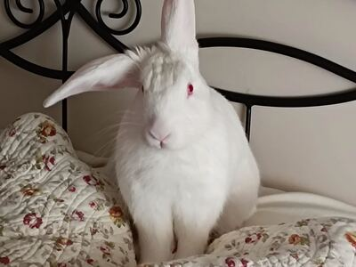

Gofre
Sexo: Macho
Edad aproximada: 2 años
Tamaño: Mediano
GOFRE es un precioso conejo albino que fue abandonado siendo un bebé y terminó en un centro municipal de recogida de animales. Gofre es muy sociable y adora los mimos. Pasa casi todo el tiempo tranquilo, pero tiene sus minutos diarios en que recuerda que es un conejo joven y vital, y se pone a hacer el loco. Le encanta pasar las noches durmiendo a los pies de la cama para pedir caricias cuando te despiertas por la mañana. A cambio, él te dará besitos en la nariz. También le gusta subirse al sofá, darse carreras y seguirte a todas partes. Es muy limpio y hace sus necesidades en su bandeja. Es un conejo joven que busca descubrir el mundo y vivir muchas aventuras. Para él todo es juego y diversión. ¿Cómo decirle que no a esos preciosos ojos rositas?